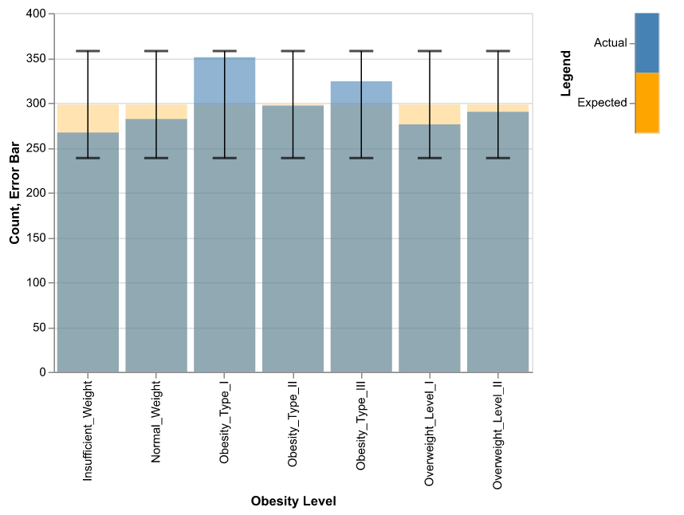

| Model | Accuracy | |
|---|---|---|
| 0 | AdaBoost + Decision Tree | 0.968454 |
| 1 | KNN | 0.875394 |
| 2 | SVM (RBF Kernel) | 0.9653 |
Predicting Obesity Level Based on Eating Habits and Physical Condition
Summary
In this study, we aim to develop a classification model to determine whether an individual is obese and, if so, categorize the level of obesity. Three machine learning models — K-Nearest Neighbors (KNN), Support Vector Machine (SVM), and Decision Tree enhanced with AdaBoost — were trained and evaluated for their performance. The results indicate that SVM and the Decision Tree with AdaBoost achieved high predictive accuracy, both around (INSERT CODE)97%, making them the most effective models for this classification task. In contrast, KNN exhibited comparatively lower performance, achieving an accuracy of (*INSERT CODE)89%, demonstrating its inferiority relative to the other two models in this context.
Introduction
Obesity, a complex and seemingly insurmountable public health and medical challenge, has become a global issue with severe negative impacts on both health and the economy (2024). This condition is associated with various medical and psychological complications, significantly affecting individuals’ health and social well-being. The World Health Organization (WHO) defines obesity as an excessive accumulation of body fat that poses a risk to health (2024). To implement this definition in practice, body mass index (BMI) — a widely used indicator of body fat — is employed to classify obesity. Specifically, under WHO guidelines, individuals with a BMI exceeding 30 are categorized as obese (2024). Those living with obesity often face persistent stigma and discrimination, which further heightens their risk of disease and mortality (Westbury et al. 2023).
Traditional methods for identifying and managing obesity often rely on clinical measurements like body mass index (BMI), which, while effective, can be time-consuming and resource-intensive (Han, Sattar, and Lean 2006). Machine learning, a subset of artificial intelligence, has emerged as a promising tool in healthcare, capable of analyzing complex patterns in large datasets (Zhou, Chen, and Liu 2022). By leveraging predictive models, machine learning can enhance the detection and management of obesity by identifying at-risk individuals, uncovering hidden risk factors, and enabling personalized interventions; this approach not only streamlines the diagnostic process but also opens the door to more accurate and scalable solutions for tackling obesity (Zhou, Chen, and Liu 2022).
Methods
Data
The dataset used is obtained from UC Irvine Machine Learning Repository (link here). This dataset was used in work by Fabio Mendoza Palechor and Alexis de la Hoz Manotas (Palechor and De la Hoz Manotas 2019). This work can be found here. The dataset contains 2111 observations with 16 features (and one target - obesity level) from individuals from Mexico, Peru, and Colombia (“Estimation of Obesity Levels Based On Eating Habits and Physical Condition ” 2019). The obesity level categories are as follows: Insufficient Weight, Normal Weight, Overweight Level I, Overweight Level II, Obesity Type I, Obesity Type II, and Obesity Type III.
As part of data validation process, we followed the guidelines outlined in the data validation chapter of work by Chen (n.d.). We checked for missing values, duplicated rows, outliers, and ensured data types for each feature are correct. We verified that the categorical features contain valid categories. We identified 24 duplicated rows which were dropped subsequently. Additionally, we reviewed the distribution of the target variable and found that all classes are within threshold of 60 observations, shown in (Figure 1). This confirmed minimal class imbalance, ensuring our data is suited for classification modeling.

Analysis
In this study, we trained three machine learning models—Decision Tree enhanced with AdaBoost, Support Vector Machine (SVM) with an RBF kernel, and K-Nearest Neighbors (KNN)—to predict obesity outcomes. The dataset was divided into training (70%) and testing (30%) sets to ensure reliable evaluation of model performance. Each model underwent hyperparameter tuning to optimize its predictive capabilities, utilizing a grid search approach to explore various combinations of hyperparameters.
For KNN, key hyperparameters such as the number of neighbors (n_neighbors), which were varied from 3 to 9, the weight function (uniform or distance), and the distance metric (euclidean or manhattan) were tested. These adjustments aimed to optimize how KNN classifies data points based on their proximity to others. The SVM model utilized a range of values for the regularization parameter (C), with values of (INSERT CODE) 0.1, 1, 10, and 100 to balance classification error and margin maximization. Additionally, the kernel coefficient (gamma) was adjusted using options like ‘scale’, ‘auto’, and specific numeric values such as (*INSERT CODE) 0.01, 0.1, and 1 to control the influence of individual data points. Finally, for the AdaBoost-enhanced Decision Tree, the number of estimators (n_estimators) was varied between (INSERT CODE)100, 150, and 200, and the learning rate was optimized (INSERT CODE) at 0.3, 0.5, and 0.7. The depth of the base estimator (estimator__max_depth) was tested between 5 and 9 to improve the model’s capacity to capture complex patterns in the data.
Result & Discussions
After tuning the hyperparameters, both the SVM and AdaBoost-enhanced Decision Tree models performed exceptionally well, achieving an accuracy of around (INSERT CODE)97%. In contrast, KNN, despite its adjustments, achieved a lower accuracy of (INSERT CODE)89%. This performance difference suggests that ensemble methods like AdaBoost, which combine the predictions of multiple models, and kernel-based methods like SVM, which use a non-linear approach to classify data, are more effective in handling the complexities of obesity classification compared to KNN, which relies on simpler distance-based logic.
References
2024. World Health Organization. World Health Organization. https://www.who.int/news-room/fact-sheets/detail/obesity-and-overweight.
Chen, Florencia D’Andrea, Tiffany a. Timbers Joel Ostblom. n.d. “Reproducible and Trustworthy Workflows for Data Science.” https://ubc-dsci.github.io/reproducible-and-trustworthy-workflows-for-data-science/.
“Estimation of Obesity Levels Based On Eating Habits and Physical Condition .” 2019. UCI Machine Learning Repository.
Han, Thang S, Naveed Sattar, and Mike Lean. 2006. “Assessment of Obesity and Its Clinical Implications.” Bmj 333 (7570): 695–98.
Palechor, Fabio Mendoza, and Alexis De la Hoz Manotas. 2019. “Dataset for Estimation of Obesity Levels Based on Eating Habits and Physical Condition in Individuals from Colombia, Peru and Mexico.” Data in Brief 25: 104344.
Westbury, Susannah, Oyinlola Oyebode, Thijs Van Rens, and Thomas M Barber. 2023. “Obesity Stigma: Causes, Consequences, and Potential Solutions.” Current Obesity Reports 12 (1): 10–23.
Zhou, Xiaobei, Lei Chen, and Hui-Xin Liu. 2022. “Applications of Machine Learning Models to Predict and Prevent Obesity: A Mini-Review.” Frontiers in Nutrition 9: 933130.